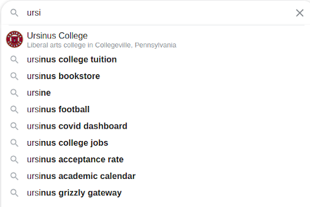
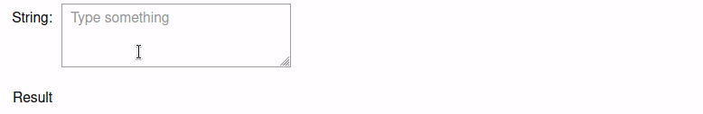

Assignment 1: Autocomplete And Spell Check (65 Points)
Chris Tralie
Due Monday 2/7/2022
- Overview/Logistics
- Data / Starter Code
- Part 1: Autocomplete
- Part 2: Spellcheck
- For Fun: Interactive Interfaces
Overview / Logistics
The purpose of this assignment is to give you practice implementing efficient algorithms in python in the service of two ubiquitous real world applications: autocompletion of text and spell check. Crucially, you will ensure that your algorithms meet a particularly efficiency standard, as per the theme of our course.
Learning Objectives
- Implement comparators to sort items in a custom way.
- Use binary search to efficiently find a range of items in an ordered list.
- Implement hash tables using object oriented paradigms
What To Submit
Submit your files autocomplete.py, hashtable.py, spellcheck.py, and strwraper.py to canvas, as well as any other .py files and notebooks you made. Also submit answers to the following questions on Canvas
- The name of your buddy, if you chose to work with one.
- A brief description of your code and how to run it
- Any other concerns that you have. For instance, if you have a bug that you were unable to solve but you made progress, write about it. The more you articulate the problem the more partial credit you will receive (fine to leave this blank)
Data / Starter Code
Click here to download the starter code for this assignment. Actually, the starter code is quite minimal. The bulk of what's important for you is the two data files words.txt and cities.txt. words.txt contains the 1/3 million most frequently used English words based off of the google trillion word corpus, where "importance" is measured by the number of times that word was used across a large collection of scraped documents on the internet. For example, "ursinus" is used 178,097 times, while "ursula" is used 976,724, so ursula would show up first for a prefix of "urs." Similarly, "cities.txt" has all of the cities in the world, where the "importance" of a particular city is measured by its population (food for thought: is this the best choice for ranking cities?).
The code below shows an example of how you might load these files into python. You're free to organize the information you load in however you want. You should refer to the sorting notes to refresh yourself on how to sort objects by different fields, since you'll need to sort both in alphabetical order and by importance at different parts of the assignment.
Part 1: Autocomplete
Autocomplete Background
Most of the interfaces we use in modern computing contain huge databases of text that can be used to predict what we're trying to type from just a few characters, as shown below:
|  |
The process is referred to as autocomplete. The query string is referred to as a prefix, and the word used to complete it is referred to as a term. For example, in the above Google search, a query prefix of "ursi" has an autocompletion of "ursinus college" (ignoring case). The possibilities should be sorted from most likely to least likely given some likelihood. For instance, some phones adapt by counting how many times people type a certain word and showing the most typed words first. In this assignment, since we lack such prior knowledge, we will simply be sorting in descending order by the number of times a word shows up, as counted by the google trillion word corpus.
In order for autocomplete to be practical, it has to be very efficient, not only because the databases of possibilities are often huge (the main one you'll be using in this assignment has over 300,000 words), but because this has to be repeated over and over again as a person types and fills in more characters to the prefix.
In this assignment, you will implement an efficient version of autocomplete using binary search. We will see later in the course how to implement an even more efficient version of autocomplete using a data structure known as a trie, but for now, binary search on a sorted list will be quite a good, practical solution.
Autocomplete Programming Tasks (30 Points)
NOTE: This part of the assignment was heavily inspired by Princeton COS 226
Your first task will be to create a file called autocomplete.py that contains a class called Autocomplete. Your constructor for this class should take as input a path to a file, and it should initialize a list of the words and their counts, sorted in alphabetical order.
You should then create a method called all_matches takes in a prefix as a parameter and returns all matching terms as a list of strings sorted in descending order of importance. The total time complexity of this method should be O(log(N) + m log(m)), where N is the total number of words in the database, and m is the number of words starting with your prefix. In other words, you should use binary search twice: once to find the word containing your prefix that comes first in alphabetical order, and once to find the word containing your prefix which comes last. Then, you should sort the chunk of words in between them in descending order of importance (this step takes O(m log m) time, which we will discuss later in the course).
As an example, suppose you initialize an Autocomplete object with words.txt and then query all_matches with the prefix "at". You should get 901 matches, where the top 10 are
For an example with the cities.txt database, suppose we query the city "College". Then we should get the following 8 total matches
We are one of only two Collegevilles in the world, and the other one has a slightly lower population!
Rubric
Below is how I will assign points in this section
- (7 Points) Setup your class and your constructor to load in, store, and pre-sort prefixes in alphabetical order. Be sure to setup your code to retain importance information to be used later.
- (20 Points) Binary search is properly implemented for finding the first and last indices of a prefix. 10 of these points are for ensuring that binary search runs in O(log(N)) time and that no steps deviate from this. For instance, you should not reverse the entire list of words, nor should you re-sort the entire list when you do an individual prefix query.
-
(8 Points) Implement the
all_matchesmethod to put everything together, as per the specification
Hints/Suggestions
-
You can test this class either by creating a jupyter notebook that imports
autocomplete.pyand calls its methods, or (especially if you prefer spyder) by creating a__main__method inautocomplete.pywith your test -
Before you implement
all_matches, you should implement and test some internal helper methods that use binary search to help you find the first and last indices in your sorted array. For example, if we searched for the prefix "urs", the first and last indices should be 304514 and 304537, respectively, which makes sense since there are ~300k words, and "urs" is towards the end of the alphabet. These indices also imply that there are 304537 - 304514 + 1 = 24 words total in the database that start with "urs". Do not proceed until this is working -
Be sure not to reverse your array in the steps that find the first and last indices! Instead, you will need to tweak your binary search method so that each of these can be done in log2(N) time
-
You can compare strings in alphabetical order with
<,>, and==. For instancewould print
True, since "philadelphia" comes before "washington dc" alphabetically.
Fun Fact: In the list of ~300k words, ceil(log2(N)+1) = 20. There is a strong analogy with the 20 questions game, where someone asks 20 yes or no questions and is able to narrow down pretty much any noun from that.
Part 2: Spellcheck
In this section, you will create a hash table class and use it to do spell check by quickly checking to see if typed words are actually in our list of ~300k words.
Step 1: HashTable Class (20 Points)
First, you should create a HashTable class with the following methods, as per a set ADT:
-
find(obj): ReturnTrueifobjis in the hash table, orFalseotherwise -
add(obj): Addobjto the hash table -
remove(obj): Removeobjfrom the hash table if it exists in the table, or do nothing if it's not there.
Your hash table constructor should take a parameter n_bins as a parameter for determining how many bins should be used.
Hint: If you're not sure where to get started, have a look at the needle in a haystack notes, as well as some starter code for linked lists that we made in class.
Background: Programming Hash Codes
In order for an object to be compatible with this data structure, it must be hashable; that is, it must implement a method hash_code that returns a number for this particular object that's used to place it in the appropriate bin. We'll use "duck typing," so that as long as an object has this method, it doesn't matter what class it's come from, and we can use it in our HashTable class. As an example, I've provided the file harrypotter.py which defines a Wizard class with the hash code based on the wizard's birthday:
So, if you were to run the following code:
It should print
At this point, I'd recommend that you test the above code, as well as some other examples, on your implementation before proceeding.
Step 2: String Hash Codes (5 Points)
In order to use this for spell check, we will need to devise a hash code for strings. We'll use Java's default hash code scheem for strings, which is defined recursively as follows (though you can implement it with a loop)
\[ h_0 = 0 \] \[ h_i = 31 * h_{i-1} + c_i \]
where ci is an int associated to the ith character, and the hash code for an entire string of length N is taken to be hN. In python, an int associated with a character can be obtained with the ord method. For instance,
would yield the number 99.
Your Task: Implement the hash_code method in the StrWrapper class in hashtable.py according to the above definition. If it works and you run the following code, for example:
Then you should get
Step 3: Spellchecker (10 Points)
Create a file called spellcheck.py with a class called SpellChecker with the following methods:
-
A constructor with one parameter which is the number of words in
words.txtto use, starting at the top of the file. Since words towards the top are more likely (though not guaranteed) to be spelled correctly, cutting them off will improve the performance (though cutting off too many will omit some correct words). -
A method
check, which takes a string parameter and returns a list of booleans corresponding to each word. Each boolean isTrueif the word is spelled correctly andFalseotherwise. Be sure to compare the lowercase version of each word, since all words inwords.txtare lowercase.
You should use your hash table implementation with string wrappers so that the search for each word is done efficiently. Choose an appropriate number of bins to make this efficient.
As an example, let's suppose you ran the following code:
Then this should return
For Fun: Interactive Interfaces
I've provided two Jupyter notebooks, AutocompleteInteractive.ipynb and SpellCheckInteractive.ipynb to interactively use your code for autocomplete and spell check, respectively, using Jupyter widgets. Below shows an example running the autocomplete interface. This updates super quickly if you've done binary search correctly, and it will be noticeably laggy if you implement linear search instead by accident
Below shows an example running the spellcheck interface
